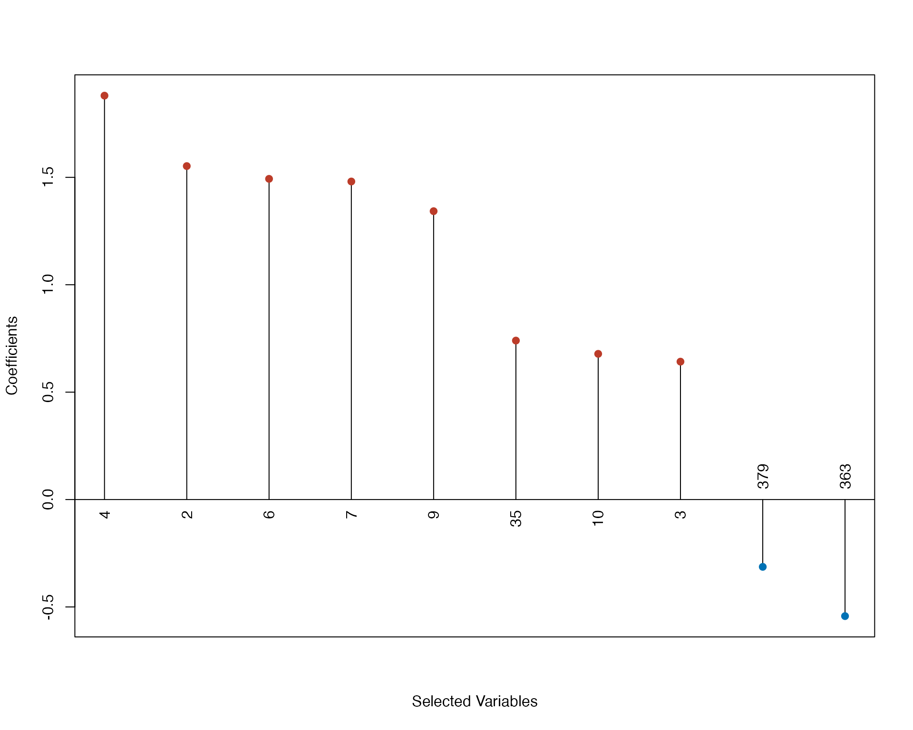

A Quick Introduction to msaenet
Nan Xiao <https://nanx.me>
Source:vignettes/msaenet.Rmd
msaenet.RmdIntroduction
The msaenet package implemented the multi-step adaptive elastic-net method introduced in Xiao and Xu (2015) for feature selection in high-dimensional regressions.
Walkthrough
Let’s load the package:
First, we generate some simulated data under a setting often used for testing high-dimensional linear models, with the function msaenet.sim.gaussian():
dat <- msaenet.sim.gaussian(
n = 150, p = 500, rho = 0.5,
coef = rep(1, 10), snr = 5, p.train = 0.7,
seed = 1001
)The parameter rho controls the degree of correlation among the variables. coef sets the coefficients of the “true” variables, and in this case, the first 10 variables will have coefficient 1 while the other 490 variables will have coefficient 0. snr represents the designated signal-to-noise ratio (SNR) in the simulated data. The parameter p.train decides the proportion of the training set (relative to the total number of observations n).
To generate simulation data for the other types of generalized linear models supported by msaenet, simply use msaenet.sim.binomial() (logistic regression), msaenet.sim.cox() (Cox regression), or msaenet.sim.poisson() (Poisson regression).
The returned object dat contains both the training and test set. We will only use the training set to do the modeling (parameter tuning and model fitting), and then evaluate the model’s performance on the test set independently.
msaenet.fit <- msaenet(
dat$x.tr, dat$y.tr,
alphas = seq(0.1, 0.9, 0.1),
nsteps = 10L, tune.nsteps = "ebic",
seed = 1005
)The parameter alphas sets the alpha tuning grid for elastic-net in all adaptive estimation steps. nsteps indicates how many adaptive estimation steps should be used.
By default, the internal parameter tuning is done by k-fold cross-validation, and the parameters which produce the minimum prediction errors will be selected. You could also set parallel = TRUE and run
library("doParallel")
registerDoParallel(detectCores())before calling this function to make the parameter tuning run in parallel. This will probably save some time if the alphas grid is denser and the data size is larger.
To select the optimal model in each estimation step with a different criterion, use the argument tune. Options include "cv" (k-fold cross-validation, default), "aic" (AIC), "bic" (BIC), and "ebic" (Extened BIC). Similarly, use tune.nsteps to specify the criterion for selecting the optimal estimation step (the optimal model from all steps), options include "max" (select the final-step, default), "aic", "bic", and "ebic".
Let’s inspect the fitted model, by looking into the best step and the selected variables (variables with non-zero coefficients), and the number of false positive selections/true positive selections:
msaenet.fit$best.step
#> [1] 6
msaenet.nzv(msaenet.fit)
#> [1] 2 3 4 6 7 9 10 35 363 379
msaenet.nzv.all(msaenet.fit)
#> [[1]]
#> [1] 1 2 3 4 5 6 7 8 9 10 22 33 35 47 124 183 191 225 266
#> [20] 269 312 325 334 363 379 388 396 449
#>
#> [[2]]
#> [1] 1 2 3 4 5 6 7 8 9 10 35 269 363 379
#>
#> [[3]]
#> [1] 2 3 4 5 6 7 8 9 10 35 269 363 379
#>
#> [[4]]
#> [1] 2 3 4 6 7 9 10 35 363 379
#>
#> [[5]]
#> [1] 2 3 4 6 7 9 10 35 363 379
#>
#> [[6]]
#> [1] 2 3 4 6 7 9 10 35 363 379
#>
#> [[7]]
#> [1] 2 3 4 6 7 9 10 35 363 379
#>
#> [[8]]
#> [1] 2 3 4 6 7 9 10 35 363 379
#>
#> [[9]]
#> [1] 2 3 4 6 7 9 10 35 363 379
#>
#> [[10]]
#> [1] 2 3 4 6 7 9 10 35 363 379
#>
#> [[11]]
#> [1] 2 3 4 6 7 9 10 35 363 379
msaenet.fp(msaenet.fit, 1:10)
#> [1] 3
msaenet.tp(msaenet.fit, 1:10)
#> [1] 7Next, we make predictions on the test set using the fitted model, and compute some evaluation metrics, such as RMSE and MAE:
msaenet.pred <- predict(msaenet.fit, dat$x.te)
msaenet.rmse(dat$y.te, msaenet.pred)
#> [1] 2.638096
msaenet.mae(dat$y.te, msaenet.pred)
#> [1] 2.172675A coefficient plot that shows the coefficient changes of all the variables across every adaptive estimation step:
plot(msaenet.fit, label = TRUE)
The y-axis in the plot represents the relative effect size estimations (standardized into [0, 1]) of the variables.
Plot the change of the information criterion (EBIC here) used to select the optimal step:
plot(msaenet.fit, type = "criterion")
Create a Cleveland dot plot for the model coefficients at the optimal step:
plot(msaenet.fit, type = "dotplot", label = TRUE, label.cex = 1)
To plot the absolute values of the coefficients instead of the raw coefficients, use abs = TRUE.
The vanilla adaptive elastic-net (Zou and Zhang 2009) is implemented by the function aenet(). For multi-step adaptive estimation based on MCP-net or SCAD-net, see ?amnet, ?asnet, ?msamnet, and ?msasnet for details. All the analyses above apply to the models fitted by these functions as well.
Summary
If you used msaenet in your research, please feel free to cite our paper (Xiao and Xu 2015) in your publications. If you have any questions or have a bug to report, please email me or create an issue on GitHub.